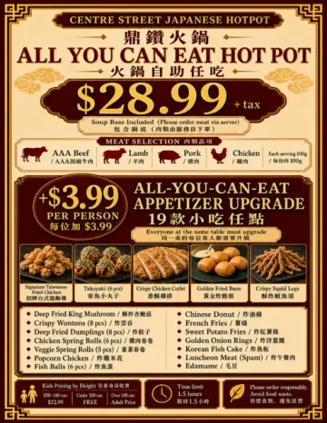
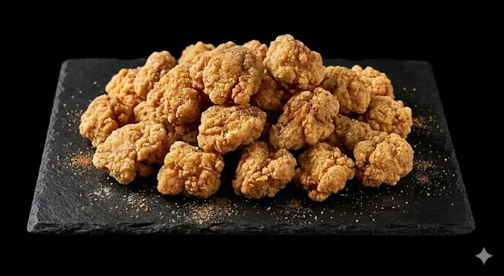
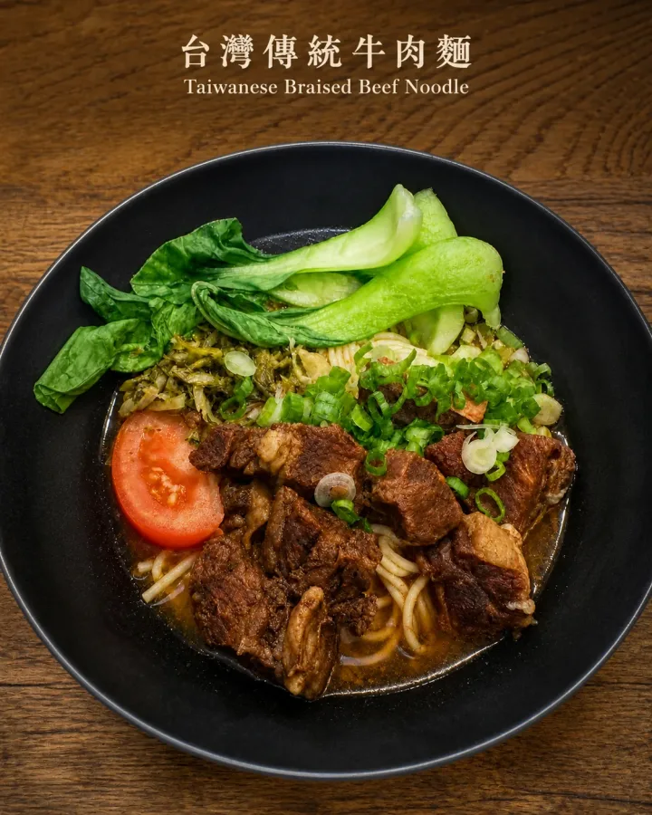

Easy for different tastes
Personal pots let everyone choose a broth and spice level. It works well for first-time guests, family dinners, friends, and larger Calgary groups.
All-you-can-eat hot pot Calgary
$28.99 + tax with soup base included. Choose AAA beef, lamb, pork, or chicken, ordered fresh through your server. Add 19 all-you-can-eat snacks for +$3.99 per person; everyone at the same table must upgrade.

Plan your table
Personal pots let everyone choose a broth and spice level. It works well for first-time guests, family dinners, friends, and larger Calgary groups.
Enjoy $28.99 AYCE hot pot, 15 soup bases, an optional 19-snack upgrade, Taiwanese snacks, milk tea, and Taiwanese and Japanese-style individual hot pot.
Call (403) 455-3188 for today's table availability. We are at 2213 Centre St N #2243. Read our hot pot guide before your visit.
New to hot pot?
Learn how individual hot pot works, what to order, and how to plan your first table.
This week
Choose a broth, meat, vegetables, and rice or noodles.

Taiwanese fried chicken, takoyaki, spring rolls, and more.
Drinks are 10% off with hotpot or a signature meal.

A comforting classic
Some tastes become more meaningful when you are far from home. After school, on rainy days, or when someone asked what you wanted for dinner, a steaming bowl of beef noodle soup was often the simplest answer.
Slow-simmered broth, tender braised beef, and noodles that soak up every bit of flavour create a familiar kind of comfort. It is the feeling of sitting down to a warm meal with the people you love.
We hope this traditional Taiwanese beef noodle soup gives you a moment to slow down, enjoy a good meal, and feel genuinely cared for.
Browse by category
Other dining options
Prefer an individual meal? Choose a Solo Hot Pot Combo with 1 personal hot pot and 1 drink for $24.99, or a Couple Hot Pot Combo with 2 personal hot pots, 2 drinks, and 1 appetizer for $58.99.

About Us
Welcome to Centre Street Japanese HotPot, a Calgary restaurant built around warm hot pot dining, fresh ingredients, and friendly hospitality.
Welcome to Centre Street Japanese HotPot.
We focus on Taiwanese and Japanese-style individual hot pot, fresh ingredients, flavorful broths, and friendly service for family dinners, group gatherings, and everyday Calgary dining.
Why Choose Us
Visit us
Mon-Fri 17:00-22:30
Sat-Sun 12:00-22:30
Call to reserve: (403) 455-3188
Reservations, group dining, and today's availability.
Hotpot · Milk Tea · Light Meals · Snacks · Family Dining
Your review helps more Calgary guests find us.